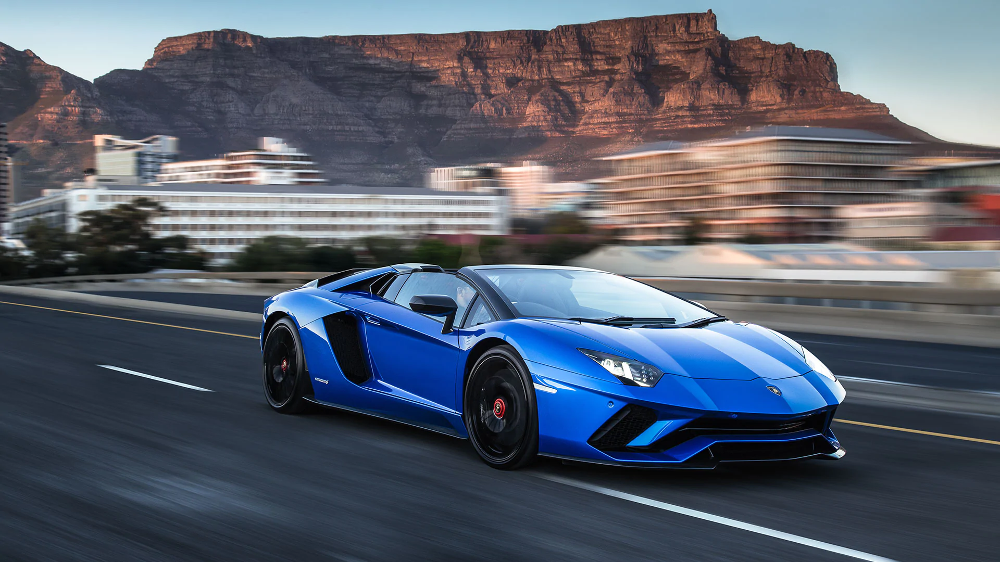
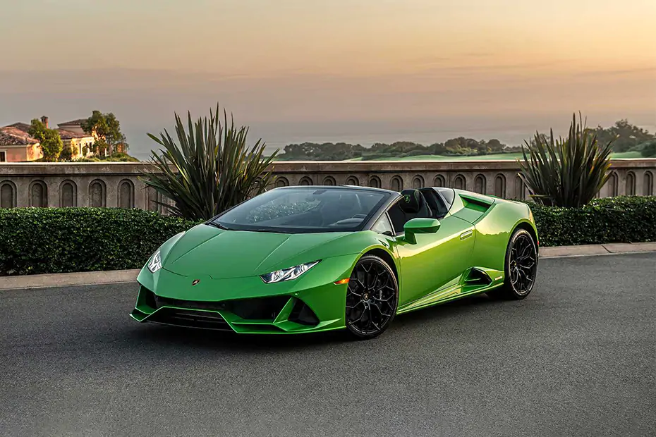
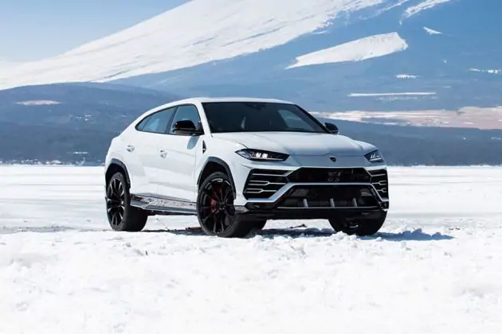

Divya Prakash |
1906015 |
| Car image |
Car Description |
Car link |
|

|
Following the Miura, Islero, Countach and Urraco, today’s most
iconic Lamborghini reflects the heritage of the historic S models
into the Aventador S. The exclusive design and a V12 engine that
develops an extraordinary 740 hp combine with the most sophisticated
technology available, LDVA (Lamborghini Dinamica Veicolo Attiva,
Lamborghini Active Vehicle Dynamics).
|
Check details of Avendator S
|
|

|
The Huracán EVO is the evolution of the most successful V10-powered
Lamborghini ever. The result of fine-tuning and refining existing
features, combined with new design solutions that increase
performance, the car stands out for its ability to anticipate and
cater to the driver’s behavior, expectations and desires.
|
Check details of Huracan Evo
|
|

|
Lamborghini Urus is the first Super Sport Utility Vehicle in the
world to merge the soul of a super sports car with the functionality
of an SUV. Powered by a 4.0-liter twin-turbo V8 engine producing 650
CV and 850 Nm of torque, Urus accelerates from 0 to 62 mph in 3.6
seconds and reaches a top speed of 190 mph. The design, performance,
driving dynamics and driving emotion flow effortlessly into this
visionary approach to Lamborghini DNA.
|
Check details for urus
|